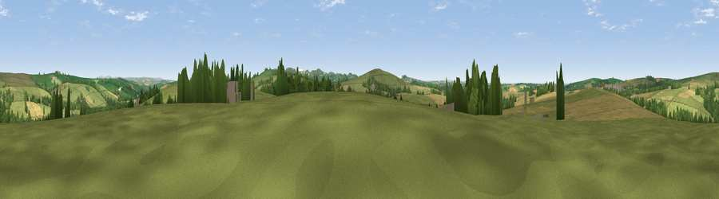

Viewpoint near Tremayne
#18541 in England · top 36% of its area beats it · near TremayneThe view, rendered

A 360° render of this exact spot computed from the terrain model, tree cover and land cover — summer colours, afternoon light, calibrated against photographs of famous viewpoints. Real trees, hedges and buildings will differ in detail.
The panorama
Grey silhouette: terrain skyline in each direction (720 bearings, Earth curvature and refraction included). Dashed green: skyline with trees (+15 m) and buildings (+8 m) as obstacles. Blue strip: how far the ground is visible on each bearing.
Where the view opens
Wedge length = distance to the farthest visible ground on that bearing (vegetation-aware). Rings at 10, 25 and 50 km.
What fills the view
63% grassland · 26% cropland · 10% woodland · 1% built-up
Angular shares of the visible panorama (visual magnitude), not map area. Landscape diversity 0.41 (0–1 Shannon).
Key numbers
More beautiful places nearby
The staircase of upgrades: each row has a higher view potential than everything closer. Driving times are estimates from straight-line distance, calibrated against real road routing — check an actual route before setting out.
| Place | Direction | Drive | Score |
|---|---|---|---|
| Viewpoint near Tremayne | S · 2 km | ~6 min | 75.5 |
| Viewpoint near St Eval | WNW · 5 km | ~12 min | 78.3 |
| Viewpoint near Roche | SSE · 7 km | ~15 min | 80.9 |
| Treviscoe Hill | S · 8 km | ~17 min | 81.8 |
| Viewpoint near Nanpean | SSE · 9 km | ~18 min | 84.2 |
| Viewpoint near Stenalees | SE · 9 km | ~18 min | 88.0 |
| Viewpoint near Crackington Haven | NNE · 35 km | ~53 min | 88.1 |
| Viewpoint near Combe Martin | NE · 105 km | ~130 min | 88.9 |
50.44689, -4.88986 · source: screening · position refined by local search. Computed location — check access rights before visiting.